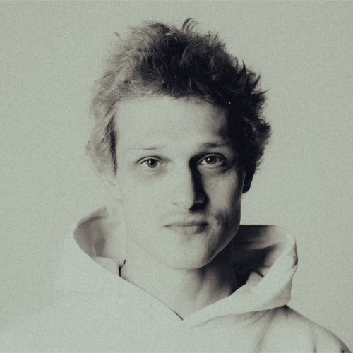

Yuri Konoplev
Software Engineer · AI / R&D · Saint Petersburg
Юрий Коноплёв — Software Engineer / AI / R&D (СПб) Стек: Python/C++/JS/TS/Wolfram Mathematica, ML/DL (PyTorch/TensorFlow) Домен: разработка ПО, анализ видео/изображения/ЭЭГ, блокчейн/криптография/финтех, продуктовые прототипы, growth marketing и исследовательские пайплайны. Сейчас: - разработка и разработка с помощью AI (Cursor); (2025–2026) - несколько проектов на заказ (в т.ч. ma8ka.com, многопользовательская игра в Telegram) (2025) - создание и развитие методологии разработки Keep AI Prompts (2025) — gitverse.ru/j0k/Keep_AI_Prompts - ставка на AI-агентов; (2025) — Happy Banana Solutions: @happybananasolutions - проект «Катюша AI» (голосовой бизнес-ассистент); (2023, 2025) github.com/j0k/Katusha github.com/j0k/Catherine-AI - Жизненный блок вне IT: · фриланс, ивенты · такси/доставка/колл-центр — живой контекст, запросы клиентов, 1000+ заказов Яндекс.Такси, продажа по меню, стрессоустойчивость (с 2024 г.) · общепит/кулинарное творчество (СушиВок, Coffee3) с 2023 г., проведение мастер-классов по суши · подхватывание бизнеса кафешки «Magic Cat» на о. Новой Голландии с концепцией «Один коктейль — одно состояние», СПб (2024) Опыт коммерческой разработки (7+ лет): - 2021–2022 · Huawei Cloud Gaming (team lead): супер-разрешение/апскейлинг, нейроархитектуры и пайплайн обучения, утилиты для команды. - 2020–2021 · XD soft, ООО «Программный продукт» (рук. проекта): запуск AI-направления (Python + NLP, emotion recognition) и интеграция ML-моделей в продакшн-продукты i.moscow. - 2019 · Waves (software engineer): RIDE/dApps; смарт-контракт-профиль для социальной сети в блокчейне Waves; команда 4→9. - 2017–2018 · Contuur (Кипр, Лимассол): арбитражный робот для криптобирж; Python + Kafka + MongoDB + Grafana; выход в прибыль; команда 3→7. - 2016–2021 · TuSion (founder/CTO→CRO): нейротех-продукт, акселерация Starta Accelerator (New York City, US); привлечено 170K$, 600+ установок, несколько пивотов; в декабре 2021 компанию закрыли. Образование: - ИМЧ РАН (неоконченная аспирантура | физиология), 2015–2019 - Французский колледж при СПбГУ (доп. образование | право/философия), 2015–2018 - СПбГУ (магистратура | биология: нейробиология/психофизиология), 2013–2015 - ИТМО (бакалавриат, магистратура | прикладная математика и информатика), 2006–2012 - ФМЛ 30, ЛНМО, Школа 639 Публикации и выступления (выборка): - Grin-Yatsenko, V. A., Othmer, S., Ponomarev, V. A., Evdokimov, S. A., Konoplev, Y. Y., & Kropotov, J. D. (2018). Infra-Low Frequency Neurofeedback in Depression: Three case studies. NeuroRegulation, 5(1). neuroregulation.org/article/view/18244 - Коноплёв Ю.Ю. (2012). Генерация слоёв сетей Фальмана с использованием генетического программирования. КМУ 2012 / СПИСОК 2012, секция компьютерных технологий и искусственного интеллекта. spisok.math.spbu.ru/2012/s15.asp - 2018 · Polar Bear Pitching, Oulu, Finland — питч проекта TuSion. Видео: youtube.com/watch?v=mYOw6fCNHpk
Yuri Konoplev — Software Engineer / AI / R&D (Saint Petersburg) Stack: Python / C++ / JS / TS / Wolfram Mathematica, ML / DL (PyTorch / TensorFlow) Domains: software engineering, video / image / EEG analysis, blockchain / cryptography / fintech, product prototyping, growth marketing, research pipelines. Now: - building with and through AI (Cursor); (2025–2026) - several contract projects (incl. ma8ka.com and a multiplayer Telegram game); (2025) - designing and evolving the Keep AI Prompts methodology; (2025) — gitverse.ru/j0k/Keep_AI_Prompts - strong bet on AI agents; (2025) — Happy Banana Solutions: @happybananasolutions - “Katusha AI” — voice business assistant; (2023, 2025) github.com/j0k/Katusha github.com/j0k/Catherine-AI - Life block outside IT: · freelance, events · taxi / delivery / call center — live context, client requests, 1000+ Yandex.Taxi orders, menu-based sales, stress tolerance (since 2024) · hospitality / cooking (SushiWok, Coffee3) since 2023, running sushi master classes · opening a festival cafe at Systo and “Magic Cat” bar in New Holland Island, St Petersburg (concept “one cocktail — one state”), 2024 Commercial development experience (7+ years): - 2021–2022 · Huawei Cloud Gaming (team lead): super-resolution / upscaling, neural architectures and training pipeline, internal tools. - 2020–2021 · XD soft (“Programmny Produkt”), AI lead: launching AI direction (Python + NLP, emotion recognition), shipping ML models into i.moscow products. - 2019 · Waves (software engineer): RIDE / dApps; smart-contract profile for a social network on Waves blockchain; team 4→9. - 2017–2018 · Contuur (Cyprus, Limassol): crypto-exchange arbitrage bot; Python + Kafka + MongoDB + Grafana; reached profitability; team 3→7. - 2016–2021 · TuSion (founder / CTO→CRO): neurotech product, Starta Accelerator (New York City, US); raised 170K$, 600+ installs, multiple pivots; company closed in December 2021. Education: - Institute of the Human Brain (PhD track | physiology, not completed), 2015–2019 - French University College at SPbU (extra degree | law / philosophy), 2015–2018 - Saint Petersburg State University (MSc | biology: neurobiology / psychophysiology), 2013–2015 - ITMO University (BSc + MSc | applied mathematics and computer science), 2006–2012 - Physics & Math Lyceum №30, LNMO, School 639 Selected publications & talks: - Grin-Yatsenko, V. A., Othmer, S., Ponomarev, V. A., Evdokimov, S. A., Konoplev, Y. Y., & Kropotov, J. D. (2018). Infra-Low Frequency Neurofeedback in Depression: Three case studies. NeuroRegulation, 5(1). neuroregulation.org/article/view/18244 - Konoplev, Y. Y. (2012). Generation of Fahlman network layers using genetic programming. KMU 2012 / SPISOK 2012, Computer Technologies & AI track. spisok.math.spbu.ru/2012/s15.asp - 2018 · Polar Bear Pitching, Oulu, Finland — TuSion startup pitch. Video: youtube.com/watch?v=mYOw6fCNHpk